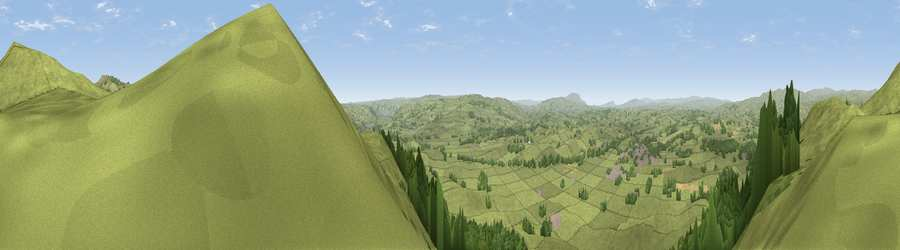

Viewpoint near Thorlby
#5508 in England · top 4% of its area beats it · near Thorlby · open accessWhere it is
The exact computed spot (SD 95888 54888). Click the marker for map links.
Public access: this spot lies on mapped open-access land (CRoW Act 2000) — you may roam here on foot. Computed from Natural England's CRoW access layer and OpenStreetMap rights of way — not the legal definitive map. Always verify locally.
The view, rendered

A 360° render of this exact spot computed from the terrain model, tree cover and land cover — summer colours, afternoon light, calibrated against photographs of famous viewpoints. Real trees, hedges and buildings will differ in detail.
The panorama
Grey silhouette: terrain skyline in each direction (720 bearings, Earth curvature and refraction included). Dashed green: skyline with trees (+15 m) and buildings (+8 m) as obstacles. Blue strip: how far the ground is visible on each bearing.
Where the view opens
Wedge length = distance to the farthest visible ground on that bearing (vegetation-aware). Rings at 10, 25 and 50 km.
What fills the view
75% grassland · 23% woodland ·
Angular shares of the visible panorama (visual magnitude), not map area. Landscape diversity 0.27 (0–1 Shannon).
Key numbers
More beautiful places nearby
The staircase of upgrades: each row has a higher view potential than everything closer. Driving times are estimates from straight-line distance, calibrated against real road routing — check an actual route before setting out.
| Place | Direction | Drive | Score |
|---|---|---|---|
| Sharp Haw | N · 0 km | ~2 min | 72.7 |
| Viewpoint near Embsay | ENE · 3 km | ~7 min | 74.5 |
| Cracoe Fell | NE · 5 km | ~11 min | 75.1 |
| Viewpoint near Bewerley | ENE · 19 km | ~33 min | 75.7 |
| Viewpoint near Bewerley | ENE · 19 km | ~33 min | 76.8 |
| Viewpoint near Buckden | N · 24 km | ~39 min | 77.3 |
| Viewpoint near Otley | ESE · 26 km | ~42 min | 77.5 |
| Little Ingleborough | NW · 28 km | ~45 min | 78.8 |
53.99002, -2.06421 · source: screening · position refined by local search. Computed location — check access rights before visiting.